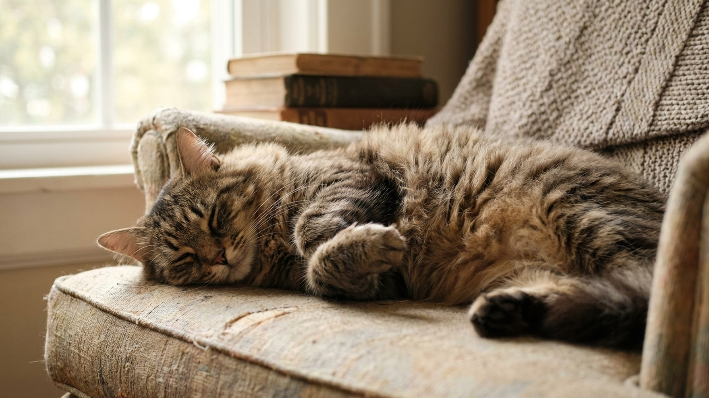

График прививок для кошки от 2 месяцев до старости: что, когда, зачем

26 мая 2026 · 9 минут чтения · Здоровье · Профилактика
Вакцинация — самая эффективная профилактика смертельных инфекций у кошек. Панлейкопения убивает непривитых кошек с вероятностью 90%. Вирусный ринотрахеит и калицивироз делают питомца источником заразы для всех кошек в доме. При этом схема вакцинации проста — и большинство хозяев справляются с ней без проблем, если знают, что и когда делать. Разбираем полный маршрут от котёнка до гериатрической кошки.
Зачем прививать кошку, которая не выходит на улицу
Это самый частый вопрос. Ответ: вирусы попадают в квартиру без кошки. На обуви хозяина, на руках, через вентиляцию, через контакт на лестничной площадке с другой кошкой. Вирус панлейкопении (кошачья чума) сохраняется в окружающей среде до года. Ринотрахеит и калицивироз — месяцами.
Единственное исключение, при котором некоторые ветеринары рассматривают снижение частоты ревакцинации — кошки старше 10 лет с документально подтверждённой историей прививок. Но это индивидуальное решение, не правило.
Базовые (core) вакцины: обязательны для всех кошек
Мировые ветеринарные ассоциации (WSAVA, AVMA) выделяют три группы базовых антигенов для кошек:
- FPV (Feline Parvovirus) — панлейкопения, кошачья чума. Смертность у непривитых — до 90% у котят. У взрослых кошек при острой форме — до 50%.
- FHV-1 (Feline Herpesvirus-1) — вирусный ринотрахеит. Кошка-носитель навсегда, вирус активируется при стрессе. Передаётся аэрозольно.
- FCV (Feline Calicivirus) — калицивироз. Поражает дыхательные пути, рот, суставы. Высокопатогенные штаммы (HPFCV) дают летальность до 60%.
В большинстве российских вакцин три этих антигена входят в комбинированные препараты: Мультифел-4 (+ хламидиоз), Нобивак Tricat, Феловакс, Purevax RCP.
- Бешенство — обязательно по закону (Федеральный закон о ветеринарии). Необходимо для оформления международного паспорта, при транспортировке, при выезде за рубеж. Кошкам, выходящим на улицу или на дачу, — обязательно вне зависимости от закона: вирус бешенства смертелен для людей и неизлечим.
Дополнительные (non-core) вакцины: по ситуации
- FeLV (вирус лейкемии кошек) — рекомендована кошкам с выходом на улицу, в питомниках, при контакте с уличными кошками. Вирус передаётся через слюну, кровь, молоко. Вакцина не 100% эффективна, но значительно снижает риск.
- Chlamydophila felis — хламидиоз. Включён в состав Мультифел-4. Актуален при содержании нескольких кошек или в питомниках.
- Bordetella bronchiseptica — бордетеллёз. Редко применяется, актуален при контакте с собаками или в питомниках с высокой плотностью кошек.
График вакцинации по возрасту
Котята до 6 месяцев
- 8-9 недель — первая вакцинация комплексной вакциной (FPV + FHV-1 + FCV). Если котёнок из питомника, уточните у заводчика, были ли уже прививки и какой вакциной.
- 12 недель (через 3-4 недели после первой) — вторая вакцинация той же вакциной + прививка от бешенства (если в первый раз не сделали). Важно: бешенство котятам до 12 недель не делают — нет иммунного ответа.
- Через 2-4 недели после второй — ревакцинация (третья доза) базовой вакцины. Три дозы — стандарт для котят: материнские антитела могут блокировать первые прививки.
- После завершения первичной серии — карантин 2 недели до контактов с другими животными.
Первый год жизни
- Через 12 месяцев после последней прививки первичной серии — первая ежегодная ревакцинация. Это критически важная точка: именно здесь многие хозяева пропускают визит, думая «уже привиты».
Взрослые кошки (от 1 года до 10 лет)
- Комплексная вакцина (FPV + FHV-1 + FCV) — 1 раз в год или раз в 3 года (по рекомендации WSAVA, если применяется вакцина с адъювантом и документально подтверждённым 3-летним иммунитетом — например, Nobivac Tricat Trio).
- Бешенство — 1 раз в год (требование российского законодательства и большинства ветеринарных учреждений при оформлении паспорта).
- FeLV — ежегодно при сохранении риска (выход на улицу, контакт с другими кошками).
Пожилые кошки (10+ лет)
- Вакцинацию не прекращают. Иммунная система стареет и нуждается в поддержке не меньше, чем у молодых.
- Перед каждой вакцинацией — обязательный осмотр и базовые анализы (кровь, моча). Вакцинировать нездоровую кошку нельзя.
- Некоторые ветеринары переходят на 3-летний интервал для пожилых кошек с хорошим документированным иммунным анамнезом — обсудите индивидуально.
Подготовка к вакцинации: что сделать за 10-14 дней
- Обработать от паразитов — глисты снижают иммунный ответ. За 10-14 дней до прививки дайте антигельминтный препарат. Популярные варианты: Дронтал, Поливеркан, Мильбемакс. Препарат подбирается по весу кошки.
- Обработать от блох — если есть признаки паразитов.
- Убедиться, что кошка здорова — нет температуры, нет выделений из носа и глаз, нет диареи, нормальный аппетит.
- Не вакцинировать при стрессе — после переезда, смены хозяина, операции. Дайте кошке 2-3 недели адаптироваться.
- Не вакцинировать беременных и кормящих кошек без специального назначения ветеринара (живые вакцины противопоказаны).
Какие вакцины применяются в России
На российском рынке в 2026 году доступны:
- Мультифел-4 (Россия, НПО Нарвак) — FPV + FHV-1 + FCV + хламидиоз. Доступная цена, широко применяется.
- Нобивак Tricat Trio (MSD Animal Health, Нидерланды) — FPV + FHV-1 + FCV. Один из наиболее изученных препаратов, применяется совместно с Нобивак Rabies.
- Purevax RCP и Purevax RCPCh (Boehringer Ingelheim, Франция) — рекомбинантные вакцины без адъюванта. Считаются предпочтительными для кошек с историей поствакцинальной саркомы в семейном анамнезе.
- Феловакс-4 (Fort Dodge, США) — FPV + FHV-1 + FCV + хламидиоз.
Конкретный выбор вакцины — совместное решение ветеринара и хозяина с учётом образа жизни кошки, доступности препарата и предыдущего анамнеза.
Поствакцинальные реакции: что нормально, что нет
Нормально в течение 24-48 часов после прививки:
- Вялость, снижение аппетита, слегка повышенная температура.
- Небольшая болезненность в месте укола — кошка не даёт трогать.
- Припухлость в месте инъекции размером до 1-2 см — проходит в течение 1-2 недель.
Требует немедленного обращения к врачу:
- Отёк морды, особенно вокруг глаз и рта — анафилаксия. Возникает в течение первых 30-60 минут после укола.
- Рвота, понос, затруднённое дыхание в первые часы.
- Уплотнение в месте укола, которое не исчезает через 4-6 недель или растёт — поводнее ветеринарного осмотра (риск поствакцинальной саркомы, редкое, но серьёзное осложнение).
Пора делать прививку, но не уверены, с чего начать? Напишите в AnimaLife — vet-AI поможет составить план вакцинации под вашу кошку.
Спросить vet-AI в Telegram → · Спросить в MAX →
FAQ
Можно ли делать прививки дома, не в клинике?
Ряд ветеринаров выезжают на дом — это удобно для стрессовых кошек. Требования те же: кошка должна быть здорова, обработана от глистов. Паспорт оформляется и на дому при наличии у ветеринара лицензии.
Прививка от бешенства — это больно для кошки?
Инъекция — кратковременный дискомфорт, не более. Большинство кошек переносят вакцинацию без выраженной реакции.
Если пропустили ревакцинацию на год — нужно начинать всё заново?
При пропуске более 3 лет — первичная серия заново (2 дозы с интервалом). При пропуске 1-3 лет — решение принимает ветеринар индивидуально, чаще всего достаточно однократной ревакцинации с проверкой титра антител.
Нужно ли прививать кошку перед стерилизацией?
Да, рекомендуется. Не позднее чем за 2 недели до операции, чтобы иммунитет успел сформироваться и снизился риск инфекций в послеоперационный период.
Что такое «ветеринарный паспорт» и зачем он нужен?
Официальный документ, в который вносятся данные о вакцинациях, обработках от паразитов, чипировании. Необходим при перевозке кошки (авиа, РЖД), при выезде за рубеж, при посещении гостиниц для животных.
← Все статьи · Открыть AnimaLife в Telegram · RSS